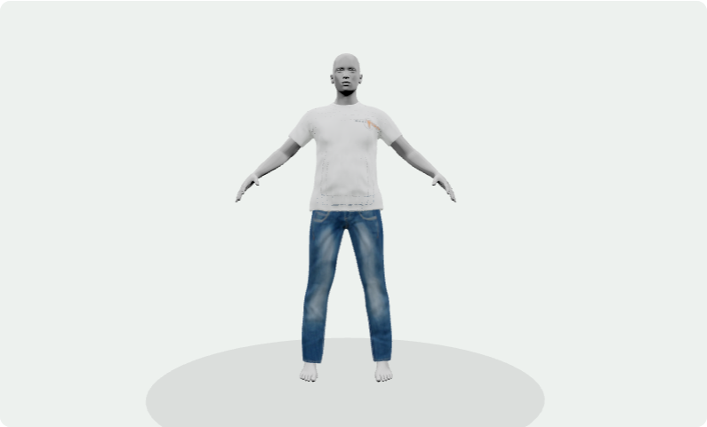
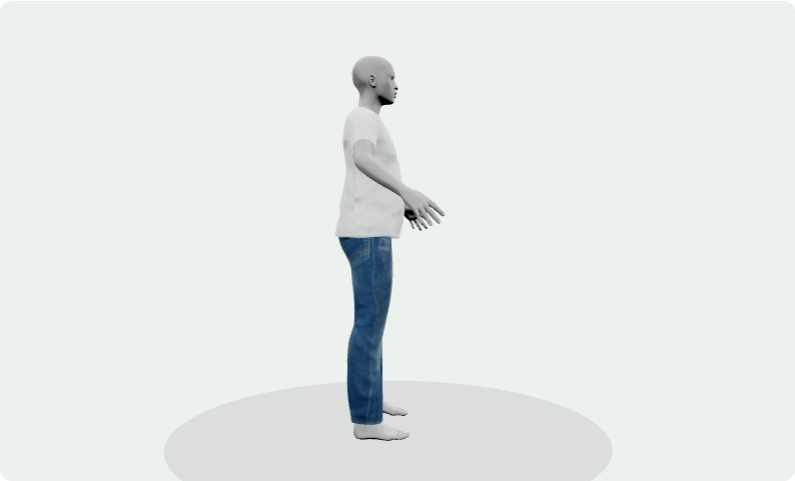

PERSONAL PROJECT PORTFOLIO · 송성근
내 몸에 맞춰,
나답게 입다.
인바디 수치에서 나만의 추정 체형으로.
체형과 의류가 함께 바뀌는 ONFIT 3D 피팅을 만들었습니다.
4인 팀 프로젝트 · 회원·프로필·인바디·3D 피팅 담당
Python · FastAPIReact · Three.jsBlender · MPFBTiDB CloudDocker · Render
WHAT I BUILT
숫자를 확인하고, 내 체형으로 입어보기
01 / INBODY인바디에서 체형까지
PDF·이미지 OCR로 수치를 읽고 사용자가 확인합니다. 저장된 기록을 불러와 파일 재업로드 없이 개인 추정 체형을 계산할 수 있습니다.
02 / BODY독립적인 체형 조절
어깨·가슴·허리·복부·골반·엉덩이·허벅지를 조절합니다. 기존 3종 프리셋과 여성형 마네킹, 개인 인바디 체형을 지원합니다.
03 / GARMENT의류를 함께 변형
반팔·긴팔·바지·아우터·후드 집업·모자를 독립적으로 착용합니다. 의류 색상을 바꾸고 카메라 방향을 유지하며 비교합니다.
인바디만으로 정확한 인체를 복원할 수는 없습니다. 결과는 규칙 기반 시각적 추정이며, 실제 체형·착용감과 다를 수 있습니다.
ACTUAL APPLICATION
설명 대신, 실제 구현 화면
로컬 ONFIT의 기본 예시 체형에서 반팔 티셔츠와 바지를 착용한 실제 WebGL 화면입니다. 개인정보나 실제 인바디 기록은 사용하지 않았습니다.

정면 · 신체와 상의·하의를 별도 GLB로 표시
측면 · 같은 체형과 의류를 유지한 방향 전환실제 착용 사진과의 정확도 비교나 모든 체형 조합 검증을 뜻하지 않습니다. 시연 영상은 아직 등록하지 않았습니다.
PROBLEM → DECISION → VERIFICATION
문제 해결을 코드로 설명합니다.
성과 수치를 과장하기보다, 발생한 문제와 선택한 해결책을 구현·회귀 검사로 연결했습니다.
01 · 체형을 조절할 때 카메라가 정면으로 돌아가던 문제
- 문제
- 사용자가 측면에서 복부를 조절하면 시점이 초기화되어 비교가 어려웠습니다.
- 원인
- 모델 Bounding Box 갱신에 따른 구도 재설정이 사용자 카메라 상태를 덮어썼습니다.
- 해결
- 카메라 세션을 모델 변형과 분리했습니다. 자동 초기화는 모델 전환 때만 허용하고 방향 버튼은 기존 거리·타깃을 유지합니다.
- 검증
- 정점·경계 갱신과 화면 크기 변경에도 orbit·zoom·target을 보존하는 테스트를 작성했습니다. 모든 기기의 육안 확인은 별도입니다.
02 · 복부와 골반을 따로 조절할 수 없었던 모델의 한계
- 문제
- 기존 모델에 필요한 독립 Morph Target이 없어 단순 비율 조절만으로는 원하는 변형을 표현하기 어려웠습니다.
- 선택
- 인체 전체 스케일 변경 대신 Blender에서 부위별 Shape Key를 제작하고 기존 정점 순서·기본 가중치를 보존했습니다.
- 검증
- 가중치의 증가·감소에 따른 실제 메시 정점 변화와 복부·골반 독립성을 검사했습니다.
- 한계
- 시각적 모델 제어를 검증한 것으로, 실제 인체 재구성 정확도나 의학적 추정을 입증한 것은 아닙니다.
03 · 인바디 OCR 실패와 실행 환경 차이
- 문제
- 로컬과 배포 서버의 Tesseract·언어 데이터 준비 상태가 달랐고, 문서 형식에 따라 수치가 누락됐습니다.
- 해결
- Windows OCR 경로를 설정으로 분리하고 Docker에 OCR 실행 환경을 구성했습니다. 추출 실패·모호한 값은 사용자에게 확인하도록 했습니다.
- 검증
- 누락·범위·여러 항목이 있는 줄 등 파싱 테스트와 추출 API 검증을 수행했습니다.
- 한계
- 모든 결과지 양식이나 이미지 품질에서 정확한 추출을 보장하지 않습니다.
04 · 새로고침으로 로그인 상태가 사라지는 문제
- 원인
- React 메모리의 세션 상태만 사용해 새로고침 때 인증 정보가 사라졌습니다.
- 해결
- 같은 탭에서 토큰과 만료시각을 유지하고 서버의 /me 응답으로 회원을 재검증합니다. 늦은 응답이 새 로그인·로그아웃을 덮어쓰지 않도록 처리했습니다.
- 검증
- 만료·서버 401·일시 장애·로그아웃·저장소 차단·요청 중 만료를 테스트했습니다.
- 한계
- 영구 로그인이나 HttpOnly 쿠키 방식이 아닙니다. 토큰 유효기간 안의 같은 탭 복원을 지원합니다.
CODE REVIEW STARTING POINTS
대표 코드부터 살펴보기
BACKEND순수 계산 모듈 분리
요청 검증·DB 접근과 신체 파라미터 계산을 구분합니다. 계산 자체를 단독으로 검사할 수 있도록 구성했습니다.
body_engine.py ↗VALIDATION측정값과 추정값 구분
입력한 인바디 수치와 개인 체형 시각 파라미터를 구분하고, 추정 상태와 한계를 응답에 명시합니다.
body_preview.py ↗FRONTEND기본 가중치 보존
기존 GLB의 Morph Target을 확인하고 지원 가능한 부위만 연결합니다. 신체와 의류의 상태를 분리해 유지합니다.
bodyMorphs.js ↗
DEPLOYMENT & TRADE-OFFS
화면과 API를 나눈 이유
01 · Render Static SiteReact 화면과 GLB·정적 파일HTTPS API 요청 →
02 · Docker APIFastAPI · 입력 검증 · OCR · 계산SQLAlchemy / TLS →
03 · TiDB Cloud회원·프로필·확인한 인바디 수치 저장원본 인바디 파일 미보관
분리로 얻은 점
UI와 API를 각각 배포하고 로그·장애 위치를 서비스별로 확인할 수 있습니다. 팀 역할에 맞춰 화면과 서버 변경을 구분할 수 있습니다.
함께 관리할 비용
API 주소와 CORS, 요청·응답 계약을 맞춰야 합니다. Docker는 업로드를 가능하게 하는 필수 도구가 아니라 OCR 의존성을 함께 준비하는 실행 방식입니다.
이 GitHub Pages는 프로젝트 소개 전용입니다. 실제 서비스와 API는 Render에서 실행됩니다.
VERIFICATION · 2026.11.11
실제로 확인한 범위
129
백엔드 관련 테스트 통과
인증·프로필·인바디·피팅·통합 API
25
프론트 관련 테스트 통과
세션·체형 정점·모자 위치·키·카메라
2
프론트엔드 빌드 통과
메인 서비스 및 팀 AI 패션 화면
선택한 관련 자동 검사의 결과입니다. 모든 화면의 육안 확인, 운영 성능, 실제 신체·상품 실측 정확도를 보장하지 않습니다.
현재 한계와 개선 과제
- 극단 체형에서 신체와 의류의 관통·실루엣을 추가 보정해야 합니다.
- 의류 변형은 원단 물리 시뮬레이션이나 정확한 사이즈 추천이 아닙니다.
- 원본 인바디 파일은 저장하지 않고 확인한 수치만 저장합니다.
- 외부 AI 검색·생성은 서버 API 키와 제공사 조건이 필요합니다. 별도의 2D AI 피팅 추론 모델은 연결 완료로 표시하지 않습니다.
TEAM & CONTRIBUTION
함께 만들고, 맡은 영역을 끝까지
ONFIT 팀 구성| 송성근 | 회원·프로필, 개인맞춤 코디, 인바디, 3D 피팅 및 관련 프론트·백엔드 |
|---|
| 황상옥 | 공통 프론트엔드·UI |
|---|
| 안종범 | 상품 크롤링·매칭·가격 비교 |
|---|
| 이승호 | 가격 이력·구매 타이밍·가격 수집 자동화 |
|---|
사용한 기술
FastAPISQLAlchemyTiDBReactReact Three FiberThree.jsBlender / MPFBTesseract OCRpytestDocker
TRY ONFIT
나만의 체형으로 확인해 보세요.
3D 피팅 화면에서 시작하세요. Render API의 첫 응답은 유휴 상태에서 늦어질 수 있습니다.